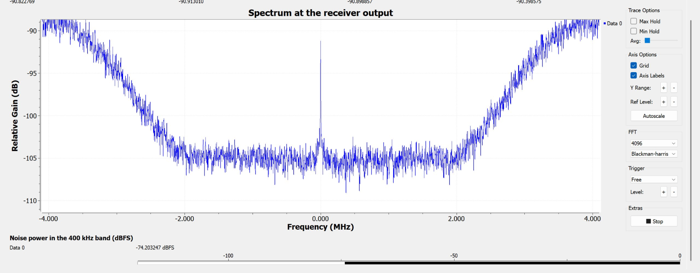
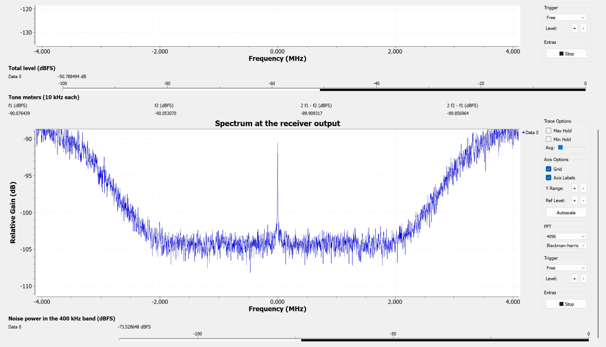

روش اندازهگیری
درگاه RX گیرنده باز بود و خروجی فلوگراف lab02_combined در حالت Off (zeros) قرار داشت. فرکانس مرکزی بر اساس تنظیم پیشفرض فلوگراف در نظر گرفته شد. در هر یک از سه تنظیم بهره، مقدار نوارسنج توان نویز بهعنوان برحسب dBFS ثبت شد. شکلهای ۱ تا ۳ خواندن نوارسنج و طیف خروجی را در هر تنظیم نشان میدهند.
محاسبهٔ عدد نویز به روش مستقیم
مقیاس dBFS سطح را نسبت به تماممقیاس دیجیتال بیان میکند. ضریب توان نویز خواندهشده را به ورودی گیرنده ارجاع میدهد. در دمای مرجع و پهنای باند معادل نویز ، داریم
در بهرهٔ ، با دادهشده در دستورکار،
در دو بهرهٔ دیگر، برای برآورد جدول، تغییر ضریب تبدیل را برابر تغییر بهرهٔ تنظیمشده در نظر گرفتیم.
| کمیت | |||
|---|---|---|---|
| توان نویز با درگاه باز، (dBFS) | |||
| ضریب تبدیل، (dB) | |||
| توان نویز ارجاعشده به ورودی، (dBm) | |||
| عدد نویز به روش مستقیم، (dB) |
مقادیر ستارهدار به فرض تغییر یکبهیک با بهره وابستهاند. برای تعیین مستقل آنها، در هر بهره باید را با یک تن ضعیف با توان ورودی معلوم به دست آورد. باز بودن ورودی نیز بهدلیل عدم تطبیق و امکان دریافت نویز محیط، دقت برآورد مستقیم را محدود میکند.
پاسخ پرسش بخش اول
روش مستقیم به چه کمیتهایی نیاز دارد که روش Y-Factor به آنها نیاز ندارد؟
روش مستقیم به کالیبراسیون مطلق در بهره و فرکانس کار و مقدار عددی برای محاسبهٔ توان مرجع نیاز دارد. در روش Y-Factor، ضریب تبدیل و پهنای باند مشترک در نسبت توان نویز دو حالت روشن و خاموش حذف میشوند. عدد نویز از این نسبت و ENR مؤثر در ورودی گیرنده محاسبه میشود. دمای مرجع در تعریف ENR منظور شده است.
طیف خروجی و خواندن نوارسنج
در هر سه طیف، خط باریکی در آفست صفر دیده میشود. نوارسنج نویز حول آفست قرار دارد و بازهٔ اسمی آن از تا است. قلهٔ صفر و افزایش کف در لبههای طیف، خارج از این بازهاند. توان نویز از نوارسنج باندی در پایین هر تصویر خوانده شد.





ثبت اجرای مراحل
با ورودی باز و منبع خاموش، توان نوار نویز در بهرههای ، و خوانده شد. در شکلهای طیف، خط آفست صفر و افزایش کف نزدیک کنارهها بیرون از نوار محاسبهٔ نویز قرار دارند.
مقیاس dBFS با مرجع تماممقیاس و ضریب تبدیل دستورکار تفسیر شد. برای بهرهٔ مرجع، به ارجاعشده به ورودی متناظر است.
توان نویز ورودی، نویز حرارتی نوار و عدد نویز مستقیم محاسبه و در جدول کالیبراسیون ثبت شدند.